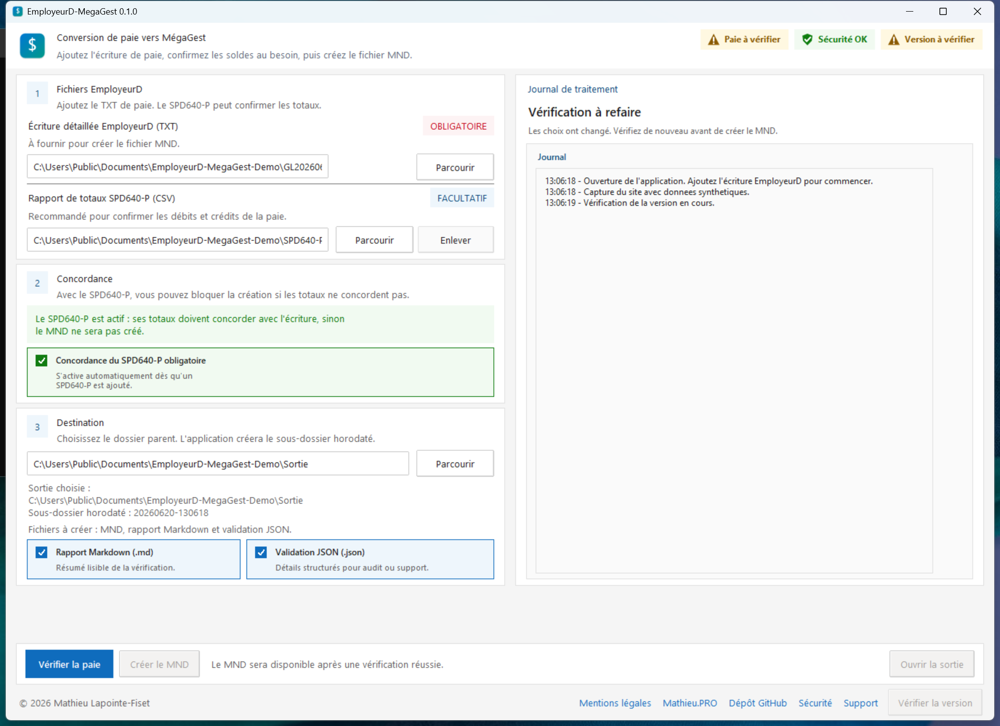

Transformer une écriture détaillée de paie en fichier MND, avec une trace de validation claire avant l'import.
Utilitaire Windows
Préparer un fichier MND MégaGest depuis une écriture de paie EmployeurD.
Un outil local pour convertir le TXT, contrôler les soldes et créer le fichier final seulement lorsque les validations sont conformes.
Version portable. Aucune installation requise.

Pour qui?
Pour les équipes qui préparent la paie dans EmployeurD et importent dans MégaGest.
Un outil pensé pour un usage clair, sans manipulation technique complexe.
Convient aux municipalités et organisations qui utilisent EmployeurD et MégaGest dans leur processus de paie.
En pratique
Trois étapes.
Choisir l'écriture détaillée standard d'EmployeurD.
Ajouter le SPD640-P CSV au besoin pour corroborer les soldes.
Générer le fichier final lorsque la validation est réussie.
Contrôles
Validations et limites.
L'application aide à repérer les écarts avant la création du fichier final, tout en laissant la validation comptable finale à l'utilisateur.
- Écriture TXT EmployeurD lisible et équilibrée.
- Totaux du MND recalculés après génération.
- Rapport SPD640-P CSV pour corroborer les débits et crédits, si fourni.
- La validation comptable finale avant import.
- Une approbation ou garantie des fournisseurs cités.
- Une connexion directe à MégaGest.
Sécurité
Les fichiers de paie restent sur le poste.
L'application travaille localement avec les fichiers choisis par l'utilisateur.
Aucune écriture EmployeurD, rapport SPD640-P, MND, rapport Markdown ou validation JSON n'est téléversé.
Chaque version officielle publie un ZIP portable et son empreinte SHA256.
Le dépôt contient uniquement des exemples synthétiques, conçus pour tester le logiciel sans données réelles.
Support
Besoin d'aide?
Indiquez la version de l'application, l'étape concernée et le message affiché.
La meilleure option pour suivre une demande, corriger un problème ou proposer une amélioration.
Ouvrir un billetPour une demande qui ne convient pas à un billet public.
services@mathieu.pro